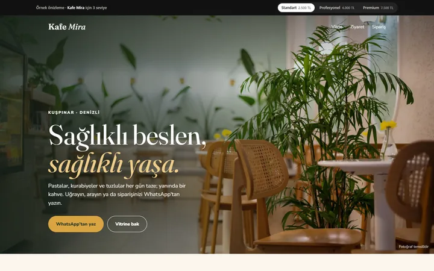
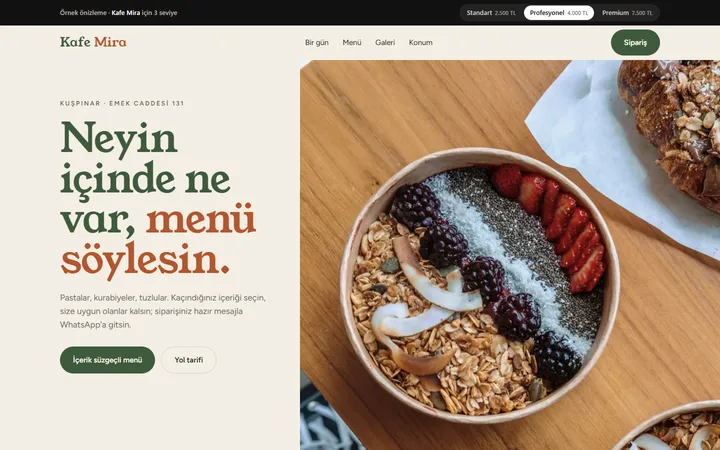
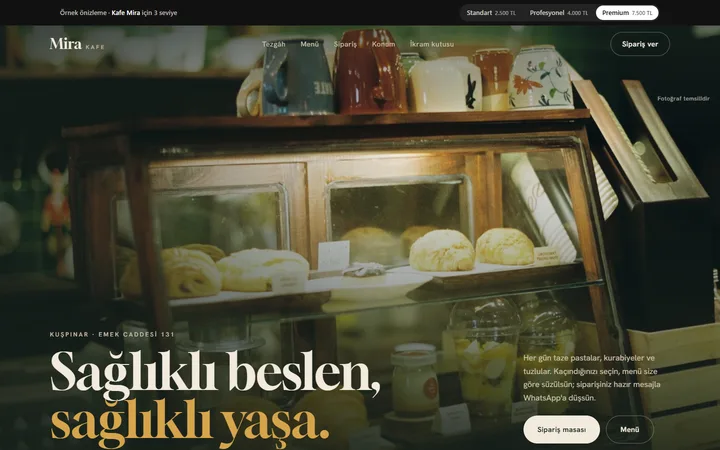

Standart
2.500 TL- Tek sayfa, telefona tam uyumlu
- Menü/hizmet başlıkları, arama ve yol tarifi düğmeleri
- Sade tasarım, gerçek fotoğraf
- Vitrin başlıkları, tek dokunuşla arama, WhatsApp ve yol tarifi
Kuşpınar'daki kafeniz için: pastalar, kurabiyeler ve tuzlular, misafirin kaçındığı içeriğe göre süzülen menü ve WhatsApp'a hazır düşen sipariş. Üç seviye, özellik ve içerik bakımından ayrılır; fotoğraflar gerçek fotoğrafçı çekimidir (temsilî). Aynı içerik üç farklı tasarım ve özellik düzeyinde hazırlandı; hangisi işletmenize uygunsa onunla devam ederiz. Her sayfanın üstündeki çubukla seviyeler arasında geçebilirsiniz.


